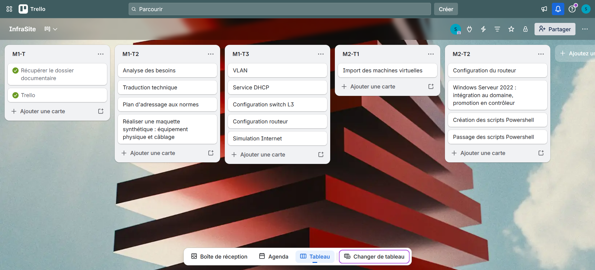
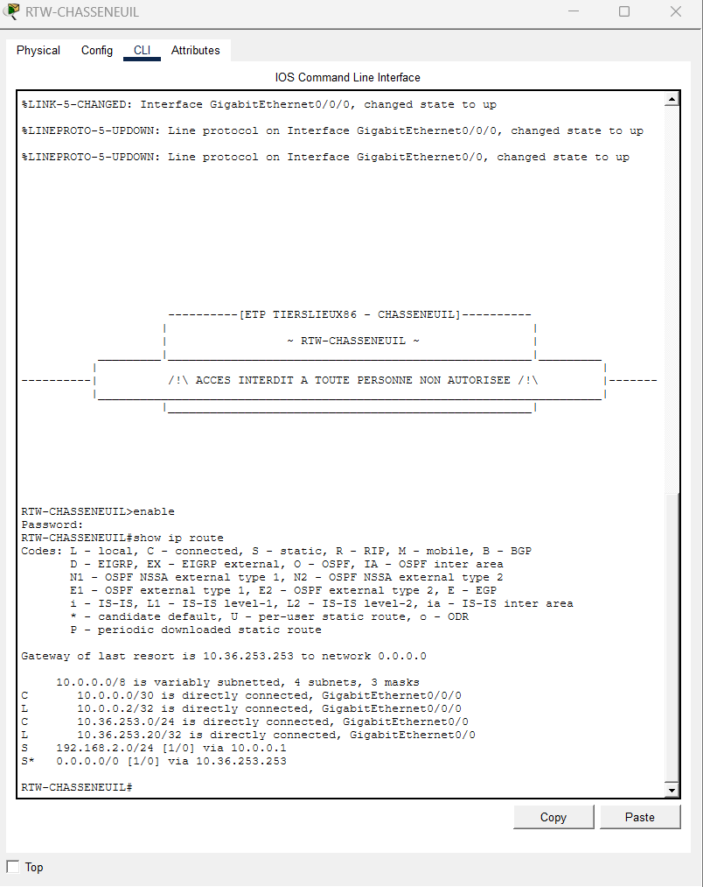
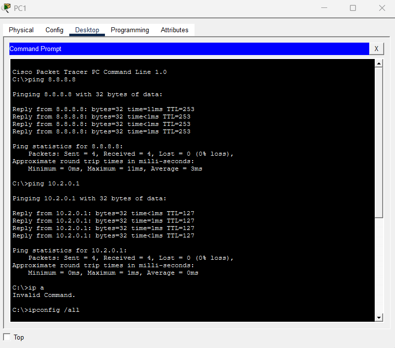
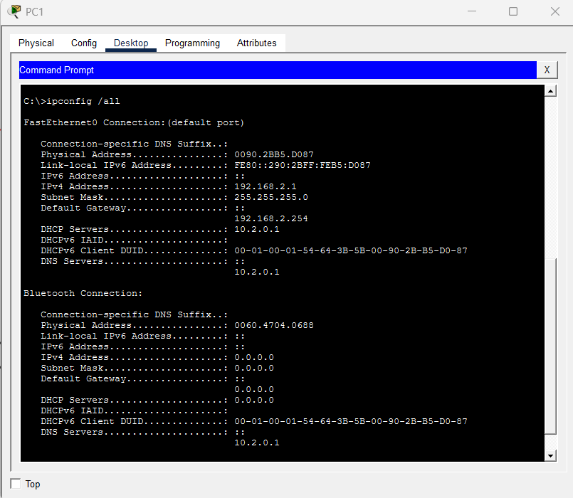
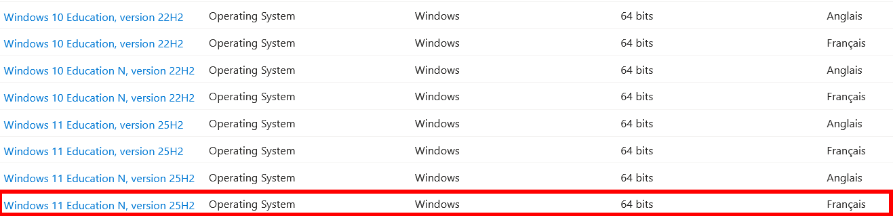
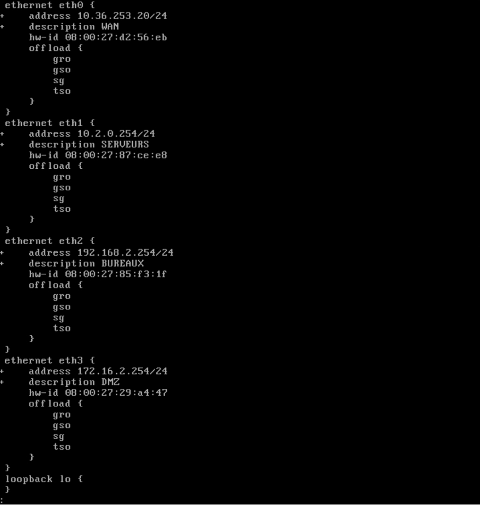
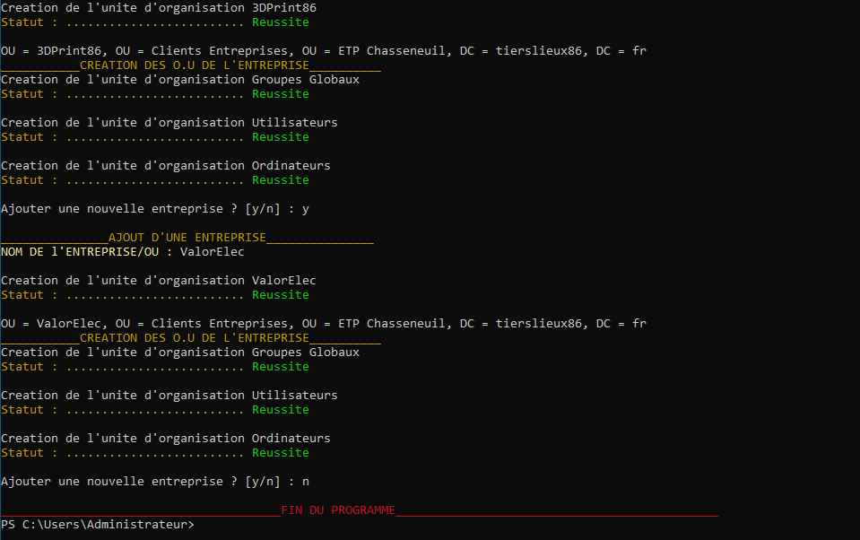

Infrasite
Tierslieux86 est une entreprise qui met à disposition des espaces de travail partagé pour des entreprises externes. Possédant plusieurs sites, son adressage réseau est soumis à plusieurs règles. On se propose aujourd'hui de maquetter le réseau avec Packet Tracer, puis de configurer un prototype virtuel pour représenter l'infrastructure.
Mission 1 — Mettre en place le projet et réaliser la maquette de l'infrastructure réseau du site de Chasseneuil
Télécharger la documentation technique de la mission 1 du projet InfraSite Télécharger la maquette PacketTracer (.pkt)Tâche 1
Pour réaliser le travail demandé, vous devez :
- Récupérer le dossier documentaire qui présente l'infrastructure de base à mettre en place sur le site de Chasseneuil
- Mettre en place un suivi de projet (Trello ou autre) à faire évoluer tout au long des missions et à présenter dans votre portfolio
Tâche 2
Commencer à rédiger la documentation du contexte de vos ateliers de professionnalisation. Rédiger un premier document présentant les éléments technologiques (équipements réseaux, serveurs) du contexte et le plan d'adressage du site de Chasseneuil (en utilisant le numéro de site : 2 et la lettre B) à partir des informations du dossier documentaire. Un premier schéma réalisé sous Packet Tracer permettra de commencer la maquette de l'infrastructure à partir de votre compréhension du contexte.
Tâche 3
Réaliser une maquette sous Packet Tracer comprenant la configuration de base des équipements actifs (routeur et commutateurs) en tenant compte du réseau logique d'un ETP présenté dans le dossier documentaire.
Plan d'approche de la tâche 1
On récupère les dossiers correspondants sur l'espace du CNED. Pour la mise en place du projet, étant donné qu'il n'y a qu'une seule personne sur le projet, un suivi des plus basiques a été choisi pour ne pas s'emmêler les pinceaux : Trello. Trello permet d'avoir une vue d'ensemble sur le projet, notamment avec des cartes modifiables, déplaçables et cochables, ce qui permet de suivre aisément notre progression.
Plan d'approche de la tâche 2
On se propose de rédiger une documentation technique pour chaque mission d'atelier sous LaTeX, car cet éditeur de texte permet d'uniformiser la mise en page, de faciliter le numérotage des images et automatise le sommaire toutes les deux compilations. Cela nécessite toutefois de créer de nombreux sous-dossiers pour organiser les images. On y mettra le plan d'adressage du réseau de l'ETP de Chasseneuil, et surtout, l'analyse des besoins et leur traduction technique. À ce moment, on crée également l'infrastructure physique du réseau sur la maquette, c'est-à-dire qu'on ajoute terminaux, équipements réseaux et câblage.
Plan d'approche de la tâche 3
Cette mission porte sur le réseau logique. Il faut penser aux services qui doivent être mis en œuvre, tels que les VLAN, le DHCP et son relais, puis tester les ping entre les différents services. Pour l'ordre d'exécution des tâches, on part du réseau interne vers le réseau externe : on implantable d'abord les VLAN sur tous les switchs, puis on configure le switch L3, puis on fait une liaison point à point avec le routeur. On déclare ensuite les routes. Un routeur en loopback pourra simuler de manière rudimentaire Internet en portant l'adresse 8.8.8.8, et un poste des bureaux devrait pouvoir ping cette même adresse. Pour le Wi-Fi, il est demandé un accès sécurisé, ce pourquoi on mettra en place une clé WPA2-PSK.
Résultats de la mission
Les contextes présentant Tierslieux86 ont été récupérés et sont téléchargeables en haut de cette page. S'en est suivi une création de compte Trello, puis une création de projet dans cette application.

En ce qui concerne la tâche 2, l'ensemble de la documentation technique est retrouvable dans le PDF téléchargeable. Elle contient l'analyse des besoins, leur traduction technique, les justifications des choix et les manières de procéder. Il en est ressorti un besoin d'intégrer un switch L3 au réseau pour qu'il en soit le cœur, mais aussi, au vu des nombreux clients et de l'accès Wi-Fi sécurisé, une segmentation du réseau en VLAN. Il nous est demandé un début de maquette, donc l'ajout d'équipement réseau et de câblage pour les connexions a été réalisé.

Au passage, on rappelle le plan d'adressage du réseau de l'ETP de Chasseneuil qui nous est donné dans le contexte :
| Nom du réseau | Plage d'adresses | Passerelle par défaut |
|---|---|---|
| DMZ | 172.16.2.0/24 | 172.16.2.254 |
| Serveurs | 10.2.0.0/24 | 10.2.0.254 |
| Bureaux | 192.168.2.0/24 | 192.168.2.254 |
| Réseau | Adresse réseau | Passerelle | Terminal | Adresse du terminal |
|---|---|---|---|---|
| DMZ | 172.16.2.0/24 | 172.16.2.254 | Serveur Web | 172.16.2.10 |
| Serveur DNS | 172.16.2.11 | |||
| Salle serveurs | 10.2.0.0/24 | 10.2.0.254 | Serveur HelpDesk | 10.2.0.1 |
| Serveur DNS | 10.2.0.2 |
Le chiffre de Chasseneuil est le 2, d'où sa redondance dans les adresses. L'adresse externe du routeur est 10.253.36.20/24.
C'est au cours de la tâche 3 que nous avons configuré les switchs et routeurs. D'abord, cela a consisté à sécuriser les équipements réseau. Puis, après s'être mis d'accord sur un nommage des VLAN, ces derniers ont été implantés sur les switchs. Les postes ont ensuite été affectés à ces VLAN en fonction du port sur lequel ils étaient branchés. Après cela, on se rend sur le switch de niveau 3 et on configure les SVI, qui ont pour adresse les passerelles par défaut du réseau auquel ils appartiennent. Bien sûr, il ne faudrait pas oublier d'indiquer IP routing pour que le routage inter-VLAN soit effectif. Ce n'est pas fini sur le switch L3 : il faut aussi déclarer le relais DHCP qui permet l'attribution des adresses IP des postes des bureaux par SRVINTRA, le contrôleur de domaine situé dans le réseau des serveurs. Enfin, on indique, toujours sur le switch L3, la route par défaut à prendre pour les paquets. Il s'agit de la liaison point à point avec le routeur. À cette étape, c'est désormais à son tour : on déclare ici des routes statiques.

La simulation d'Internet n'est pas très élaborée, elle est détaillée dans la documentation technique. Des tests ping sont lancés pour connaître la connectique :

En restant sur l'invite de commande, on vérifie rapidement qu'on a une adresse IP dans la bonne plage, avec un serveur DHCP et une passerelle bien configurés.

Mission 2 — Mettre en place le prototype virtuel du site de Chasseneuil
Télécharger la documentation technique de la mission 2 du projet InfraSiteTâche 1
Pour réaliser le travail demandé, vous devez :
- Avoir installé un hyperviseur (Proxmox de préférence ou VirtualBox) sur votre poste de travail et disposer d'au moins 16 Go de RAM pour une mise en œuvre « confortable »
- Installer les machines virtuelles suivantes : une machine virtuelle VyOS, une machine virtuelle Windows Server 2022, une machine virtuelle Windows 11 Education
Tâche 2
Mettre en place le prototype virtuel du site de Chasseneuil (un Contrôleur de domaine Active Directory, un client et un routeur), vous pourrez vous appuyer sur la plateforme réalisée dans le cadre du Bloc 2.1 Séquence 7 afin de l'adapter. Pour réaliser le travail demandé, vous devez :
- Configurer le routage sur la machine VyOS pour avoir plusieurs sous-réseaux conformément au schéma des ETP de TiersLieux86 ;
- Configurer le service DHCP sur le serveur Windows et l'agent de relais DHCP sur le routeur ;
- Installer et configurer le domaine Active Directory du site de Chasseneuil ;
- Créer les utilisateurs et les groupes selon le schéma fourni (administration, adhérents et l'entreprise ValorElec) ;
- Mettre en place un dossier partagé sur le contrôleur de domaine pour le personnel de TiersLieux86 de Chasseneuil avec des droits de lecture/écriture en fonction du statut : employé ou responsable.
Plan d'approche de la tâche 1 — Récupération des machines virtuelles
Sur Azure, on récupère les VM Windows : Windows 11 Education N et Windows Server 2022. Pour VyOS, il faut aller sur le site de VyOS (https://vyos.net/get/stream/).



Paramétrage des machines virtuelles
Ensuite, on les importe dans VirtualBox. En ce qui concerne le réseau, le routeur a une interface dans le réseau interne des serveurs, une autre dans le réseau interne des bureaux, une autre dans la DMZ et la dernière en NAT. Pour le routeur, on prend 2048 MB de mémoire RAM avec un CPU. La machine Windows 11 a 4096 MB de RAM, un stockage de taille virtuelle de 64 Go et 2 CPU, tandis que le serveur a 2048 MB de RAM pour un stockage virtuel identique au poste et un seul CPU.
Plan d'approche de la tâche 2 — Configuration du routeur
Le login et le mot de passe du routeur est VyOS. Les commandes sont très proches de celles des équipements Cisco, donc la configuration ne devrait pas poser trop de problème, sauf pour la déclaration de l'agent relais DHCP, qui nécessitera des recherches sur Internet.
Configuration du serveur
D'abord, on ajoute au serveur plusieurs rôles : AD DS, DHCP, DNS (et iSCSI pour l'atelier suivant, EvolSysWin). Ensuite, on le promeut en contrôleur de domaine. Là, on passe un script qui crée l'arborescence du domaine, comme décrite dans le cahier des charges. Pour créer le partage sur le serveur, on partitionne le disque C: et le formate en NTFS. On pourra par la suite moduler les droits des fichiers qui s'y trouveront. Les droits sur les fichiers sont attribués aux groupes domaine local selon la méthode AGDLP recommandée par Microsoft. Le script d'intégration des utilisateurs fait l'objet d'une mission de l'atelier EvolSysWin, nous ne détaillerons pas ici la façon dont cela a été fait. Noublions pas de configurer le DHCP.
Intégration du poste
Pour intégrer le poste au domaine, il faut vérifier que la passerelle (192.168.2.254/24), le DHCP et le DNS (10.2.0.1/24 pour les deux services) sont bien paramétrés. Éventuellement, il faudra désactiver l'IPv6 et le pare-feu Windows, car lors de tests ping vers le serveur, le retour bloque parfois. Ensuite, on se rend dans les paramètres, on en profite pour modifier le nom de l'ordinateur selon les règles précisées dans le contexte, puis on s'authentifie en tant qu'administrateur pour intégrer le domaine. Pour ValorElec, le nom d'un de leurs ordinateurs commence par BBE2 car on se situe dans le bâtiment B, étage 2. Ensuite, à supposer que le numéro entreprise de ValorElec est 01, et que le poste est dans la salle 01, sur la prise 01, on aurait un nom ainsi : BBE2L01S01P01.
Résultats de la mission
Voici l'état des interfaces du routeur :

Le serveur est bien contrôleur de domaine...

...avec le DHCP réglé. Preuve à l'appui : le poste a reçu une adresse IP dans la plage spécifiée.

Par ailleurs, l'arborescence est faite, grâce au script ArborescencePrimaire.ps1.


Enfin, les accès aux droits ont été correctement configurés (voir documentation technique pour plus de détails). Effectivement, madame Pervenche est une employée et n'a pas de droits de modification, contrairement aux responsables.

Bilan
État des lieux
L'atelier InfraSite pose les bases pour les prochains travaux, et il était donc important qu'il soit fait avec soin. C'est pourquoi une attention particulière a été prêtée à la documentation technique. Le but a été d'établir une organisation, tant en termes de suivi de projet que de ressources. Cela a permis également de revoir les commandes Cisco et les bases de première année. Les trois VM sont opérationnelles et peuvent communiquer entre elles. Les scripts Powershell ont permis de gagner du temps, les droits sur les partages sont corrects.
Problèmes rencontrés
La plus grosse difficulté a été la mise en place du relais DHCP sur VyOS, car bon nombre de forums ne donnaient plus de solution à jour. Il fallait y aller à tâtons pour trouver la bonne commnade.
Suggestions d'amélioration
On pourrait pousser la maquette en mettant des ACLs en vue de configurer la DMZ.